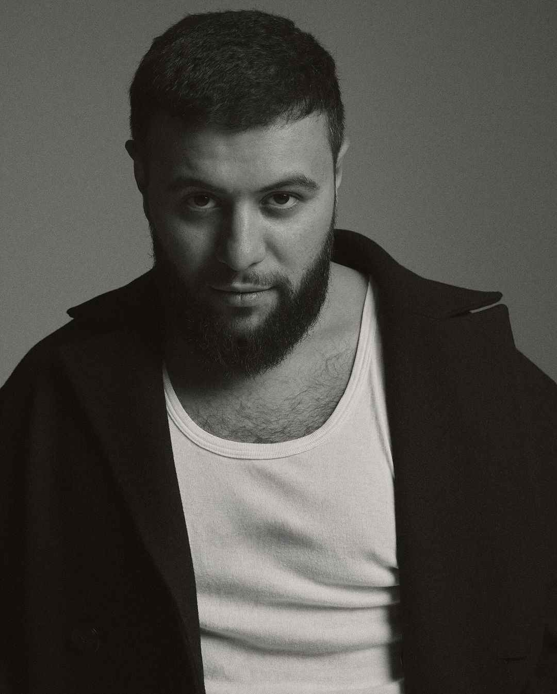

Биография Hammali
Настоящее имя: Артем (фамилия не раскрыта)
Дата рождения: 17 декабря 1994 года
Место рождения: Республика Татарстан, Россия
Ранние годы и начало карьеры
Hammali, настоящее имя Артем, родился в Казани, где с раннего возраста проявлял интерес к музыке. Он начал заниматься музыкой в подростковом возрасте, вдохновляясь различными жанрами, включая хип-хоп, R&B и поп. Артем начал писать свои первые тексты и эксперимировать со звуками, что впоследствии привело его к созданию музыки в более зрелом возрасте.Создание дуэта Hammali & Navai
В 2016 году Артем объединился с Романом (Navai), и вместе они образовали музыкальный дуэт Hammali & Navai. Их сотрудничество началось с желания создать уникальный звук, который сочетал бы в себе элементы хип-хопа и мелодичного R&B. Дуэт быстро завоевал популярность благодаря своим запоминающимся мелодиям и глубоким текстам, которые затрагивают темы любви, личных переживаний и отношений.
Прорыв и успех
Первым значимым хитом дуэта стал трек "Привет", который вышел в 2017 году и мгновенно завоевал популярность. Песня стала знаковой для их карьеры, и с тех пор Hammali & Navai начали активно выступать на радиостанциях и на YouTube, где их клипы собирали миллионы просмотров.
Дуэт продолжал выпускать успешные синглы и альбомы, получая признание как от критиков, так и от слушателей. Их музыка отличалась искренностью и актуальностью, что сделало их любимцами молодежной аудитории.
Достижения и награды
Hammali & Navai получили множество наград и номинаций в музыкальной индустрии. Их альбомы и синглы занимали высокие позиции в чартах, а также получали золотые и платиновые сертификаты в России. Дуэт активно сотрудничает с другими исполнителями, что помогает им расширять свою аудиторию и экспериментировать с новыми музыкальными направлениями.
Личная жизнь
Несмотря на свою популярность, Артем предпочитает держать свою личную жизнь в тени. Он делится с поклонниками лишь важными моментами, сохраняя при этом свою индивидуальность и уникальность.
Заключение
Hammali продолжает развиваться как артист, экспериментируя с новыми звуками и стилями. Его музыка находит отклик у многих слушателей, а искренние тексты и запоминающиеся мелодии делают его одним из ярких представителей современной российской музыки.
Биография Navai
Настоящее имя: Наваи (настоящее имя: Наваи Аскеров)
Дата рождения: 12 мая 1999 года
Место рождения: Ташкент, Узбекистан
Карьера: Navai — узбекский рэп-исполнитель и автор песен, который стал известным благодаря своему уникальному стилю и глубоким текстам. Его музыкальная карьера началась в подростковом возрасте, когда он начал писать свои первые песни и записывать их в домашних условиях. Navai родился и вырос в Ташкенте, где с раннего возраста проявлял интерес к музыке. Он слушал различные жанры, включая хип-хоп, R&B и поп, что оказало значительное влияние на его музыкальный стиль. В подростковом возрасте он начал писать свои собственные тексты, вдохновляясь личными переживаниями и окружающей действительностью.
Музыкальная карьера
В 2017 году Navai выпустил свои первые треки, которые быстро завоевали популярность в социальных сетях и на музыкальных платформах. Его музыка сочетает в себе элементы хип-хопа и R&B, а тексты часто затрагивают темы любви, потерь, мечт и молодежной культуры. Одним из его первых хитов стал трек "Yurak", который получил множество положительных отзывов и помог ему привлечь внимание широкой аудитории. После этого он продолжил выпускать новые песни, которые становились все более популярными.
Прорыв и успех
Navai стал известным не только в Узбекистане, но и за его пределами. Его музыка начала звучать на радиостанциях и на музыкальных фестивалях. Он активно сотрудничал с другими исполнителями и продюсерами, что способствовало его росту как артиста. В 2020 году Navai выпустил свой первый альбом, который стал настоящим событием на музыкальной сцене. Альбом получил положительные отзывы критиков и слушателей, а также принес ему несколько наград и номинаций на музыкальных премиях.
Личное жизнь Несмотря на свою популярность, Navai старается оставаться скромным и близким к своим корням. Он активно взаимодействует со своими поклонниками через социальные сети, делясь с ними своими мыслями и опытом. В свободное время он увлекается спортом и путешествиями, что также находит отражение в его музыке.
Заключение
NAVAi — это артист, который продолжает развиваться и удивлять своих поклонников новыми музыкальными проектами. Его искренние тексты и уникальный стиль делают его одним из самых ярких представителей новой волны узбекского хип-хопа. С каждым новым релизом он подтверждает свой статус талантливого музыканта и автора, способного затрагивать сердца слушателей.
